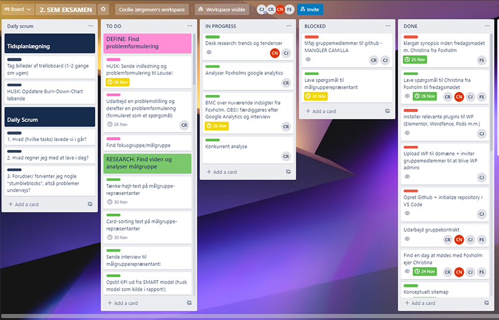
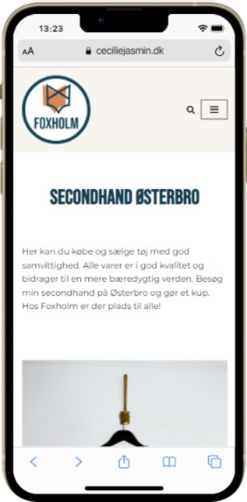

The Process
In this project we had to find a newly started company and
create innovative multimedia solutions to help increase sales
and UX. During the project we used “design thinking” as process
method which means we worked in iterations through the different
phases.
For project managing, we held daily SCRUM
meetings and visualized the different tasks in a Trello board.
We kept track of our progress by using a burndown chart.
To research the existing site and ideate new
solutions we used tools such as BMC, SWOT/TOWS, surveys,
observation, and Screaming Frog. Every iteration was based on
results from user tests to optimize UX and UI.

Code
The redesigned Webshop was built using the CMS, WordPress with
our own customized child theme. To create buttons and products
for the Webshop we used WP plugin “Pods” and its custom pods.
With this we filled out the desired fields/information we wanted
to show in loop view and single view.
The filter buttons in the loop view were created using Custom
Taxonomy Pods. When customizing the child theme, we added event
listeners to the buttons to make them clickable.
To get the products we fetched the JSON data using async
function and WP REST API. Before coding we planned the layout of
the website by making wireframes and defined our final design
with mockups.
Design
After testing the existing site we found out the Webshop had too
much information which was overwhelming for the user. We decided
to make the new design simple and user friendly using white
space, gathering information, and changing the navigation of the
site.
Simple, neutral monochromatic colors were used
as primary colors to create a minimalistic look. The orange is a
secondary color and symbolizes the Fox in the company name which
is based on Christina’s own last name “reeves” which means fox.
To create contrast and catch the eye of the user, we also used
blue as a secondary color. To bring out more of Christina
Reeves’ personality we created video content for both social
media and the Webshop.
